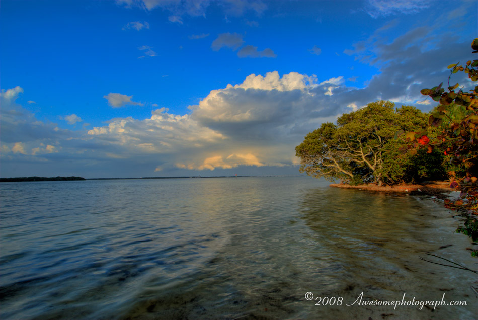
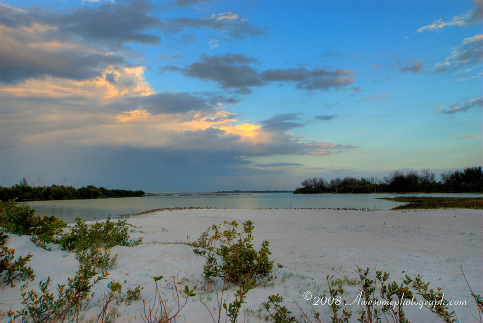
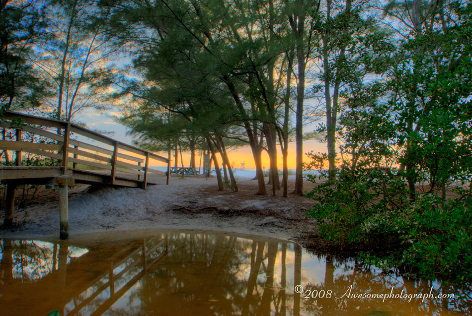
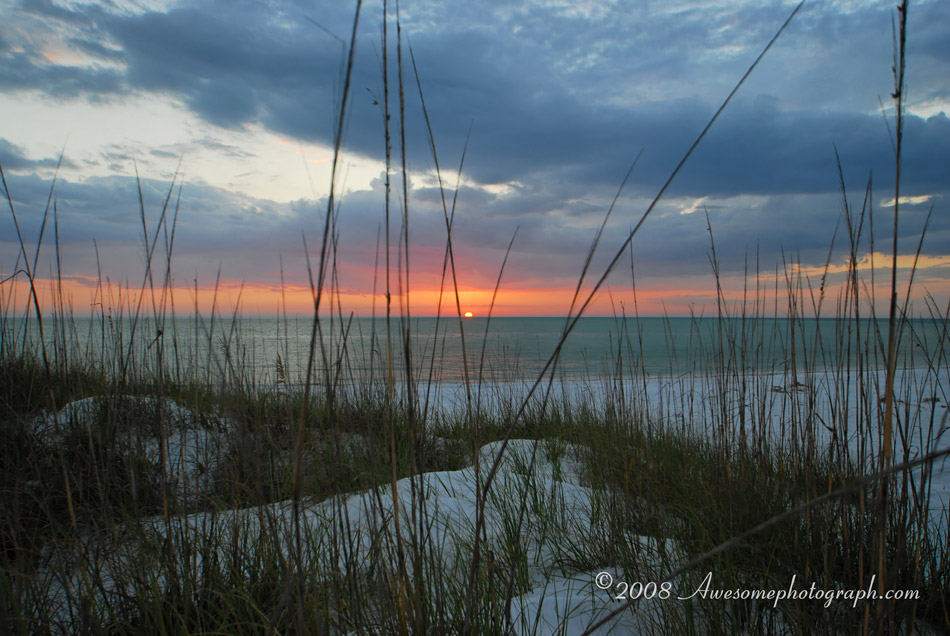
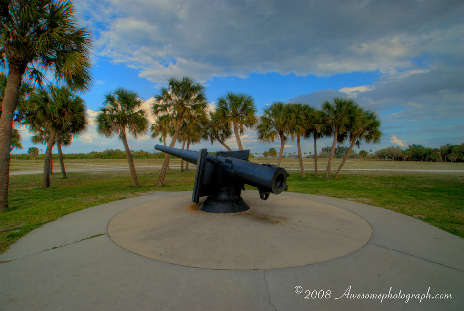
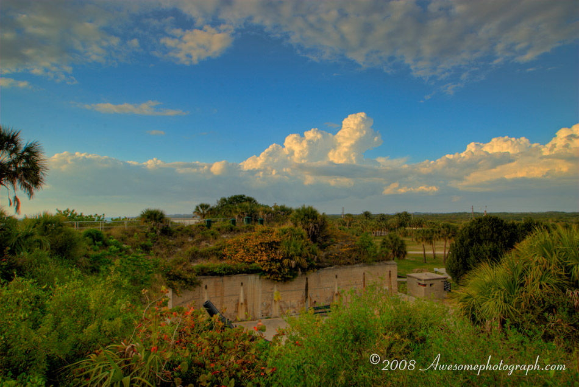
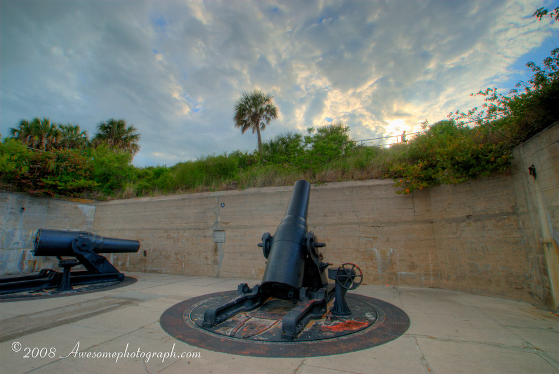
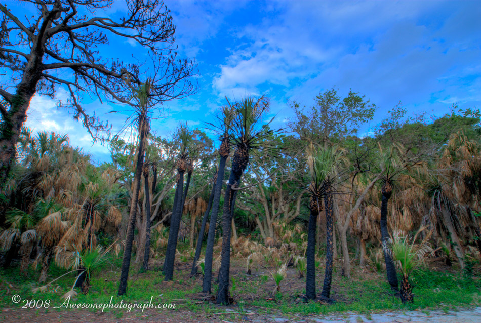

View looking towards the Docks and Campground

Fort DeSoto Park - America's Top Beach 2008, "The Portrait of Tranquility", Tampa Bay, FL
Above is The North Beach at Sunset...
I have been visiting Fort DeSoto's awesome Scenery and beaches since I was kid in the
early 1970's. Memories of getting there Sunday morning before sunrise. Just to get a
great pavilion near the north beach area. Mom with a huge griddle cooking blueberry
Pancakes, bacon and eggs for breakfast. As a kid there was more things to do at Fort
DeSoto than could possibly fill the one day a month or so that we would go.
A flock of Short Billed Dowitcher's near Sunset

I love the wildlife, enough bird species to keep the avid Bird watchers busy year round.
Award winning beaches, North Beach is a little slice of paradise.
The dreamy entrance to north beach

Huge Dunes, like on Florida's Forgotten Coast, soft creamy white stuff as far the eye can see.
Fort DeSoto's North Beach Dunes at Sunset

A cool old fort with lots history and Big Guns, plenty of picnic facilities and hiking trails...
A British Rapid Fire Cannon facing east

View to North from top of Fort

The Main Guns inside the Fort

And it's very well maintained, here is shot a few palms growing where park rangers had
conducted a controlled burn a few years ago...

Fort De Soto's North beach was just Voted America's top beach for 2008. It's nickname is
"The Portrait of Tranquility". Once you go there and do some exploring, You will agree this
is a wonderful award winning magical place.
Map of Fort De Soto Park:
http://www.pinellascounty.org/park/maps/color/amenities/FORTDESOTO.pdf
Here is the official Fort DeSoto Web Site: http://www.pinellascounty.org/park/05_Ft_Desoto.htm
How to get to Fort DeSoto, a Pinellas County Park, in Tampa Bay, Florida:
Where: Located off 54th Avenue South in St. Petersburg. From Interstate 275 take the
54th Ave South exit, just north of the Skyway Bridge. From St. Pete Beach, take the
Pinellas Bayway S.R. 682 (at the Don Cesar) east. Turn south on S.R. 679 and
drive south
for about 5 miles to Fort DeSoto County Park. There is a 50 cent toll on the Bayway,
and another 35 cent toll to get to the park.
Parking: Lots of FREE parking
Hours: Park is open from 7am until dark. The fishing piers are open 24 hours and admission is Free.
Beach Facilities: Restrooms, outdoor showers to rinse off, food concession, 2 fishing piers, hiking
trails, canoe and kayak rental, bike rentals, beautiful waterfront campground,
boat launch ramp with lots of parking, ferry to Egmont Key, hundreds of picnic tables,
historic stuff, nature stuff.
All of these Fort DeSoto Photograph's shot in HDR.
Taken using a Nikon D80 DSLR Camera and using a Tamron 11 -18mm Wide angle lens.